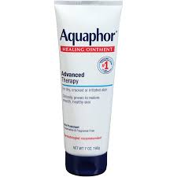

The Healing Process Is A Waiting Process
The first thing that you need to know about getting a tattoo is that just because you are done sitting in the chair, doesn't mean that you are done.
A tattoo will take up to three weeks to heal depending on your skin. To put it in few words, the needle that is going in your skin is like a cut, it is opening the skin. The ink will stay in your skin, but the skin still needs to heal. You are going to see the ink coming out or look like it is peeling away, trust me, it won't. You tattoo is there to stay, but it is going to take time, you have to trust the process and take care of it the proper way if you want it to look good for years to come.
The Best Methods
The tattoo artist may offer to put Sani-Derm on your tattoo which is a clear bandage that is used for burn, this will ensure that your tatto is not exposed to external materials that may cause infection. You will have to keep it on for about a week and will not be able to see your tattoo due to the ink sack that with develop under the patch. this is a great method for beginners because it requires little to no maintence. The only downside to this option is that if you peel it off too soon, there is a chance that the ink in the tattoo will come out, leaving you with spots that will have to be touched up.
My personal favorite option is having an uncovered tattoo, using soap, water and Auqaphor. If you ask any tattoo junkie ehat to do, they will refer you to Auqaphor. Doing this method means that you are washing the tattoo with antibacterial soap twice a day and dabbing the area with a paper towel to dry. This will go on for the duration of a healing tattoo. Then after 3-4 days, you can apply a small amount of Aquaphor after washing your tattoo. This method is great is done right. For begginners, this method may be scary, it may seem that they are doing the wrong thing or that they are messing up their tattoo. This is the most practiced form of tattoo care though, so there is no need to fear.